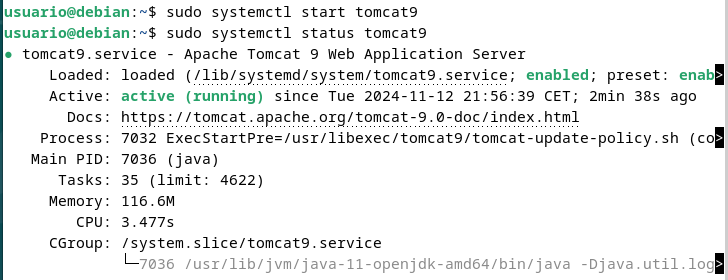
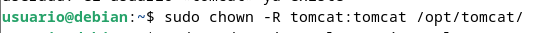
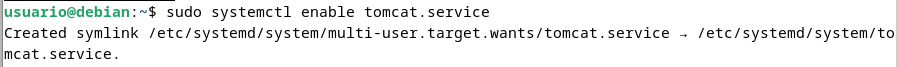
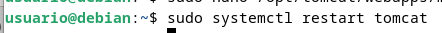
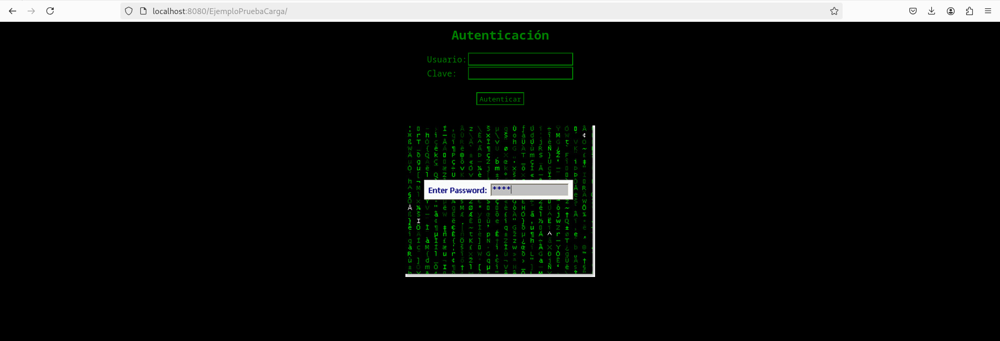

Práctica 3.1: Instalación de Tomcat
Atención
Estos apuntes siguen aquí para temas de consulta pero a día de hoy tiene ciertas partes que pueden haberse quedado obsoletas (Heroku por ejemplo ahora es de pago), los iré actualizando en la medida que el tiempo me lo permita en esta nueva página.
Introducción
Si consultamos el apartado de versiones de Tomcat en su página oficial, nos daremos cuenta de que no vamos a usar la última versión, la 10, para esta práctica, sino la anterior, la 9. La pregunta es casi inevitable:
¿Por qué?
En el enlace anterior vemos como desde su versión 9, Tomcat da soporta a Java 8 y superiores. Sin embargo, a partir de la versión 10.1.x, da soporte a Java 11 y superiores.
¿Qué significa esto?
En Java 9 se introdujeron novedades como un nuevo sistema de módulos (Jigsaw), entre otras.
En Java 11 se dio un paso más al haber renombrado completamente las rutas de paquetes javax. a jakarta.. Oracle, a pesar de haber hecho público el desarrollo de Java, no hizo lo mismo con su nombre.
Así las cosas, resulta que Java 8 puede que a día de hoy aún sea la más usada en proyectos reales. Dicho esto, podría realizarse un proceso de migración de un proyecto de Java 8 a Java 11 y utilizarlo en Tomcat 10.
No obstante, para Java 8 su soporte para uso comercial (pagando) acabó en Marzo de 2022, pero para uso no comercial sigue hasta 2030.
En conclusión, no es raro encontrarse en el mundo real un proyecto a desplegar realizado en Java 8. Podría realizarse una migración y los conceptos de despliegue que veremos seguirían aplicando. Así las cosas, por facilidad en la realización de las prácticas utilizaremos Tomcat 9 y el plugin oficial de Maven para Tomcat 7 para el despliegue (luego veremos el motivo).
Instalación de Tomcat
Esta práctica es muy sencilla y va a consistir en realizar la instalación del servidor de aplicaciones Tomcat 9, en una máquina virtual corriendo Debian 11 Bullseye.

Se puede hacer tanto con el administrador de paquetes apt como de forma manual. La forma más recomendable por su sencillez es la primera.
Para ello, y como sugerencia, podéis apoyaros en este tutorial online, aunque sóis libres de consultar tantas fuentes como deseéis.
Obviamente, debéis utilizar vuestro propios usuarios y contraseña.
Despliegue manual mediante la GUI de administración
Realizaremos el despliegue manual de una aplicación ya previamente empaquetada en formato WAR. Para ello:
-
Nos logueamos con el usuario previamente creado.
-
Buscamos la sección que nos permite desplegar un WAR manualmente, seleccionamos nuestro archivo y lo desplegamos.

Tras estos pasos, se nos listará la aplicación ya desplegada como un directorio más y podremos acceder a ella.
Task
Documenta el despliegue manual de la aplicación que os podéis descargar para tal efecto en Aules (archivo .war).
Despliegue con Maven
Instalación de Maven
Para instalar Maven en nuestro Debian tenemos, de nuevo, dos opciones:
- Instalación mediante gestor de paquetes APT
- Instalación manual
La primera, recomendada, es mucho más sencilla y automatizada (establece todos los paths y variables de entorno), aunque con la segunda se podría conseguir un paquete más actualizado.
Ambos métodos vienen explicados aquí
Si decidimos seguir el primer método, el más sencillo, vemos que es tan simple como actualizar los repositorios:
sudo apt update
E instalar Maven
sudo apt install maven
Para comprobar que todo ha ido correctamente, podemos ver la versión instalada de Maven:
mvn --v
Configuración de Maven
Para poder realizar despliegues en nuestro Tomcat previamente instalado, necesitamos realizar la configuración adecuada para Maven. Ya sabemos que esto en Linux significa editar los archivos de configuración adecuados. Vamos a ello.
- En primer lugar necesitamos asegurarnos de que en el apartado anterior de la práctica hemos añadido todos los usuarios necesarios, así como sus respectivos roles. Debemos añadir el rol de
manager-scriptpara permitir que Maven se autentique contra Tomcat y pueda realizar el despliegue.
Los roles utilizados por Tomcat vienen detallados en su documentación, que merece ser consultada:

En dicha documentación se nos indica que, por temas de seguridad, es recomendable no otorgar los roles de manager-script o manager-jmx al mismo usuario que tenga el rol de manager-gui.
Info
Tendremos dos usuarios, uno para la GUI y otro exclusivamente para hacer los deploys de Maven.
Así las cosas, modificamos el archivo /etc/tomcat9/tomcat-users.xml acorde a nuestras necesidades (los nombres de usuario y contraseña deberán ser los que elijáis para vosotros):

- Editar el archivo
/etc/maven/settings.xmlpara indicarle a Maven, un identificador para el servidor sobre el que vamos a desplegar (no es más que un nombre, ponedle el nombre que consideréis), así como las credenciales. Todo esto se hará dentro del bloque servers del XML:
- Ahora debemos modificar el
POMdel proyecto para que haga referencia a que el despliegue se realice con el plugin de Maven para Tomcat.
Info
No existen plugins oficiales para Tomcat más allá de la versión 7 del servidor. No obstante, el plugin para Tomcat 7 sigue funcionando correctamente con Tomcat 9.
Otra opción sería utilizar el plugin Cargo

Donde lo que añadimos es el bloque
<build>
<finalName>war-deploy</finalName> #
<plugins>
<plugin>
<groupId>org.apache.tomcat.maven</groupId>
<artifactId>tomcat7-maven-plugin</artifactId>
<version>2.2</version>
<configuration>
<url>http://localhost:8080/manager/text</url> #
<server>Tomcat.P.3.1</server> #
<path>/myapp</path> #
</configuration>
</plugin>
</plugins>
</build>
Despliegue
Teniendo ya todo listo para realizar despliegues, ahora crearemos una aplicación Java de prueba para ver si podemos desplegarla sobre la arquitectura que hemos montado. Para ello utilizamos el comando:
mvn archetype:generate -DgroupId=raul -DartifactId=war-deploy -DarchetypeArtifactId=maven-archetype-webapp -DinteractiveMode=false
Podéis sustituir los valores de groupID y artifactId (este será el nombre de la aplicación) por lo que queráis.
Tras generar esta aplicación, los comandos finales que se utilizan en Maven para desplegar, volver a desplegar o desplegar una aplicación, son:
mvn tomcat7:deploymvn tomcat7:redeploymvn tomcat7:undeploy
Así pues, tras el despliegue con Maven nos indicará que todo ha ido correctamente con un mensaje de BUILD SUCCESS, tal que así:

Y, accediendo a través de la GUI, debemos ver que la aplicación está desplegado y que podemos acceder a ella perfectamente:

TAREA
Realizar el despliegue con la aplicación de prueba.
Repetir el despliegue pero esta vez con otra aplicación que no es la de prueba. Más adelante ya hablaremos de git pero de momento, usaremos los comandos que veremos a continuación.
Nos clonamos el repositorio:
git clone https://github.com/cameronmcnz/rock-paper-scissors.git
 Nos situamos dentro de él:
Nos situamos dentro de él:
cd rock-paper-scissors
Y cambiamos de rama:
git checkout patch-1

Tras esto debemos proceder exactamente igual que en el caso anterior, con la ventaja de que ya tenemos configurados los usuarios de Tomcat y los parámetros de Maven.
Así pues, sólo habría que añadir el bloque <plugin>...</plugin> adecuado para poder hacer nuestro despliegue.
<plugin>
<groupId>org.codehaus.mojo</groupId>
<artifactId>tomcat-maven-plugin</artifactId>
<version>1.1</version>
<configuration>
<url>http://localhost:8080/manager/text</url> #
<server>tomcat</server>
<path>/rock-paper-scissors</path>
</configuration>
</plugin>
Task
Documenta, incluyendo capturas de pantallas, el proceso que has seguido para realizar el despliegue de esta nueva aplicación, así como el resultado final.
Resultados

Info
Si se hace desde la misma maquina que las prácticas de Nginx, primero debemos de cambiar el puerto en el documento /etc/tomcat10/server.xml porque no puede compartir puerto con nginx ya que crea conflicto.
Debemos buscar una línea que define el puerto conector. Algo como:
<Connector port="8080" protocol="HTTP/1.1"
connectionTimeout="20000"
redirectPort="8443" />
Cuestiones
Habéis visto que los archivos de configuración que hemos tocado contienen contraseñas en texto plano, por lo que cualquiera con acceso a ellos obtendría las credenciales de nuestras herramientas.
En principio esto representa un gran riesgo de seguridad, ¿sabrías razonar o averigüar por qué esto está diseñado de esta forma?
- Se hace así para simplicar la configuración y el despliegue de Tomcat, incluso para administradores con poca experiencia.
- Evita la necesidad de integrar mecanismos de cifrado o gestión de claves
- Facilita la edición y transferencia de configuraciones entre entornos sin requerir procesos adicionales
- Garantiza que cualquier sistema o librería que interactúe con Tomcat puede autenticar sin depender de herramientas adicionales para descifrar las claves.
- Confía en la configuración adecuada de permisos del sistema operativo
- Se espera que los administradores restrinjan el acceso física o remoto al servidor.
Referencias
JSF 3.0 en Tomcat 10 con Java 11
Install and configure jdk11 + Tomcat + Maven under Linux system
Step-by-step Maven Tomcat WAR file deploy example
How to deploy the java application to Tomcat 9 webserver using Maven
How to Install Apache Maven on Debian 11 Bullseye
How to Deploy a WAR File to Tomcat
Migrate Maven Projects to Java 11
How to configure Tomcat 9.0 in Maven
Github: cameronmcnz/rock-paper-scissors
Why are plain text passwords in the config files?
Documentación
Instalación TOMCAT9
Abrimos el puerto 8082
Actualizamos los repositorios
Instalamos Java usando apt
Instalamos Tomcat9
Creamos el grupo y usuario tomcat9
Iniciamos y comprobamos el estado de tomcat9

Editamos los roles de los usuarios con el comando sudo nano /etc/tomcat9/tomcat-users.xml

Instalamos el manager y el host manager de tomcat9
Comprobamos que podamos acceder a la web http://localhost:8080/manager/html introduciendo nuestras credenciales configuradas en el paso anterior.
Accedemos al host-manager para comprobar que tenemos acceso
Accedemos a la url Apache Tomcat y seleccionamos la opción de tar.gz del apartado Core
Creamos el directorio /opt/tomcat
Extraemos Tomcat:
- Para ello debemos ir al directorio donde se encuentra el archivo apache-tomcat-*.tar.gz. Como en mi caso está en el directorio ~/ lo puedo hacer ahí mismo.

Movemos el contenido extraido a /opt/tomcat
Añadimos el grupo y usuario tomcat

Damos permisos recursivos al usuario y grupo creados

Obtenemos la ruta del paquete Java que instalamos en los primeros pasos con el comando sudo update-java-alternatives -l

Y la copiamos
Abrimos el archivo de configuración de Tomcat con el comando sudo nano /etc/systemd/system/tomcat.service.
Pegamos el siguiente path y en la parte de Enviroment=JAVA_HOME= cambiamos la url que pone por la de la ruta del paquete Java que hemos copiado anteriormente
Dentro de ese archivo copie el path:
[Unit]
Description=Apache Tomcat
Wants=network.target
After=network.target
[Service]
Type=forking
Environment=JAVA_HOME=/usr/lib/jvm/java-1.11.0-openjdk-amd64/
Environment=CATALINA_PID=/opt/tomcat/temp/tomcat.pid
Environment=CATALINA_HOME=/opt/tomcat
Environment='CATALINA_OPTS=-Xms512M -Xmx1G -Djava.net.preferIPv4Stack=true'
Environment='JAVA_OPTS=-Djava.awt.headless=true'
ExecStart=/opt/tomcat/bin/startup.sh
ExecStop=/opt/tomcat/bin/shutdown.sh
SuccessExitStatus=143
User=tomcat
Group=tomcat
UMask=0007
RestartSec=10
Restart=always
[Install]
WantedBy=multi-user.target

Otorgamos permisos de ejecución a todos los scripts con el comando sudo bash -c "chmod +x /opt/tomcat/bin/*.sh"

Habilitamos el servicio tomcat con el comando sudo system enable tomcat

Agregamos un usuario de Tomcat al archivo de configuración

Copiamos el siguiente código y remplazamos linuxhint con el nombre de usuario que quieras definir y cambia la contraseña donde dice YourPasswordHere
<role rolename="admin"/>
<role rolename="admin-gui"/>
<role rolename="manager"/>
<role rolename="manager-gui"/>
<user username="linuxhint" password="YourPasswordHere" roles="admin,admin-gui,manager,manager-gui"/>
Edita el archivo de configuración con el comando sudo nano /opt/tomcat/webapps/manager/META-INF/context.xml y comenta la línea
<Valve className="org.apache.catalina.valves.RemoteAddrValve"
allow="127\.\d+\.\d+\.\d+|::1|0:0:0:0:0:0:0:1" />
<!-- <Valve className="org.apache.catalina.valves.RemoteAddrValve"
allow="127\.\d+\.\d+\.\d+|::1|0:0:0:0:0:0:0:1" /> -->

Reinicia Tomcat

Vamos a http://localhost:8080/manager

Desplegamos un archivo .war

Vamos a http://localhost:8080/EjemploPruebaCarga (O el nombre que tenga tu .war) y se debería de haber cargado el script que hemos exportado

Instalación de Maven
Actualizamos los repositorios e instalamos Maven

Para comprobar que todo ha ido correctamente vemos la versión instalada con el comando mvn --v
Configuración
Añadimos el rol de manager-script a la configuración de los usuarios de tomcat en el archivo /etc/tomcat9/tomcat-users.xml

Editamos el archivo /etc/maven/settings.xml
Añadimos nuestro nombre, el nombre de la práctica y una contraseña a nuestra elección

Modificamos el POM
-
Primero creamos un nuevo proyecto Maven

-
Si todo ha ido bien nos mostrará un mensaje de BUILD SUCCESS

-
Vamos a la carpeta que se nos ha creado y abrimos el archivo
pom.xml
-
Añadimos el bloque
<build>
<finalName>war-deploy</finalName> #
<plugins>
<plugin>
<groupId>org.apache.tomcat.maven</groupId>
<artifactId>tomcat7-maven-plugin</artifactId>
<version>2.2</version>
<configuration>
<url>http://localhost:8080/manager/text</url> #
<server>Tomcat.P.3.1</server> -> Aquí va el server que has configurado en el archivo settings.xml
<path>/myapp</path> -> Aquí viene el directorio donde se encuentra el archivo pom.xml
</configuration>
</plugin>
</plugins>
</build>
Resultado
Si entramos en http://localhost:8080/manager tendría que mostrarse el apartado de que se ha creado nuestra web EjemploPruebaCarga.